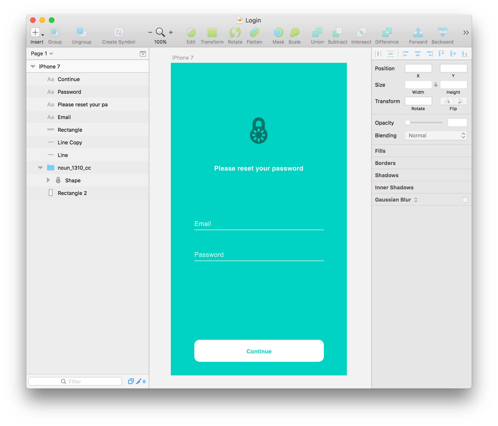
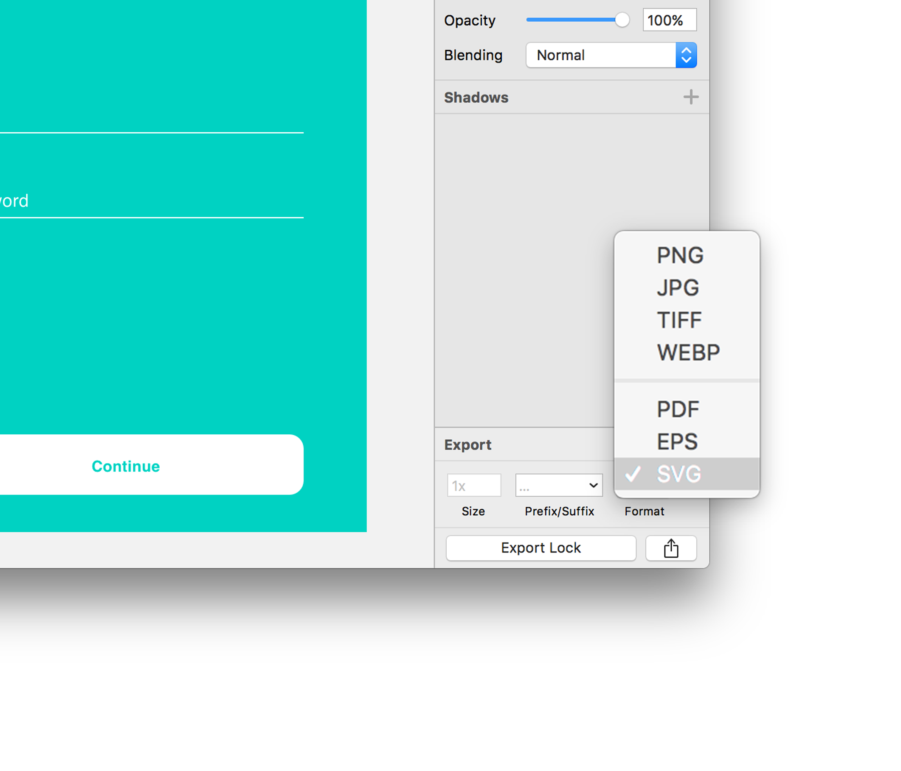
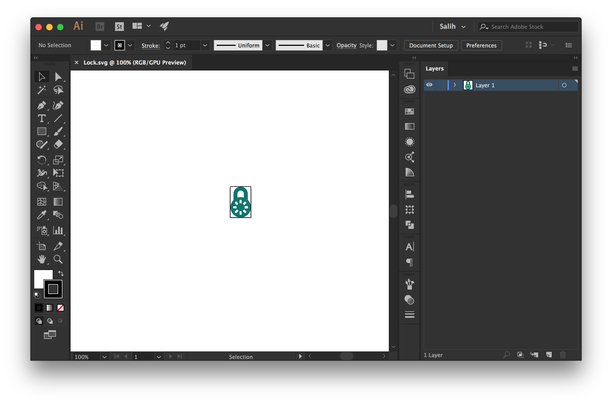
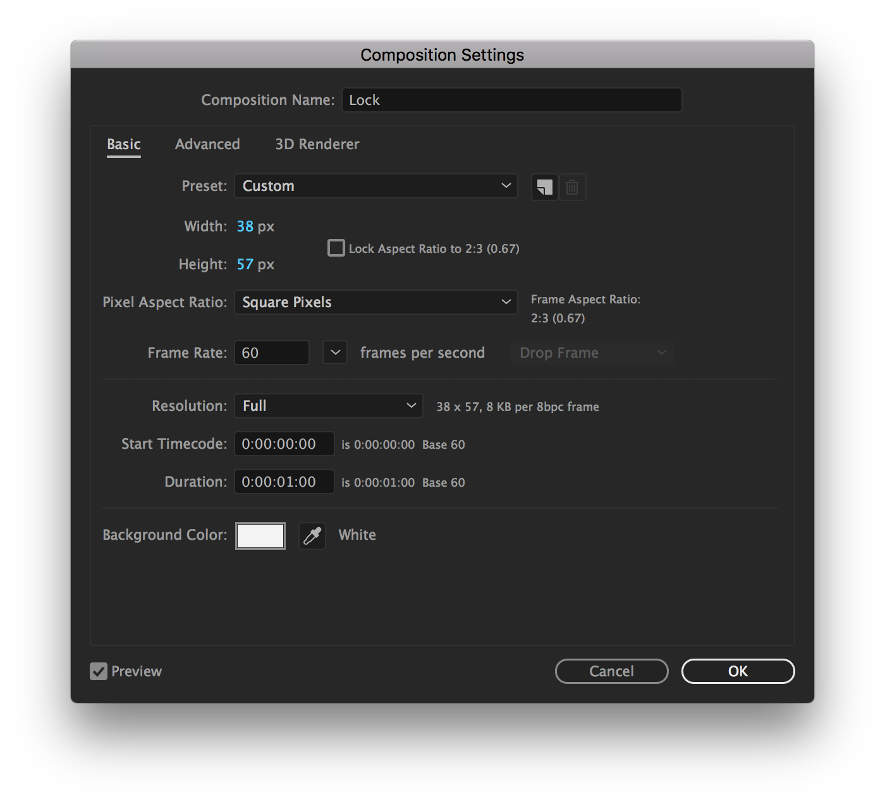
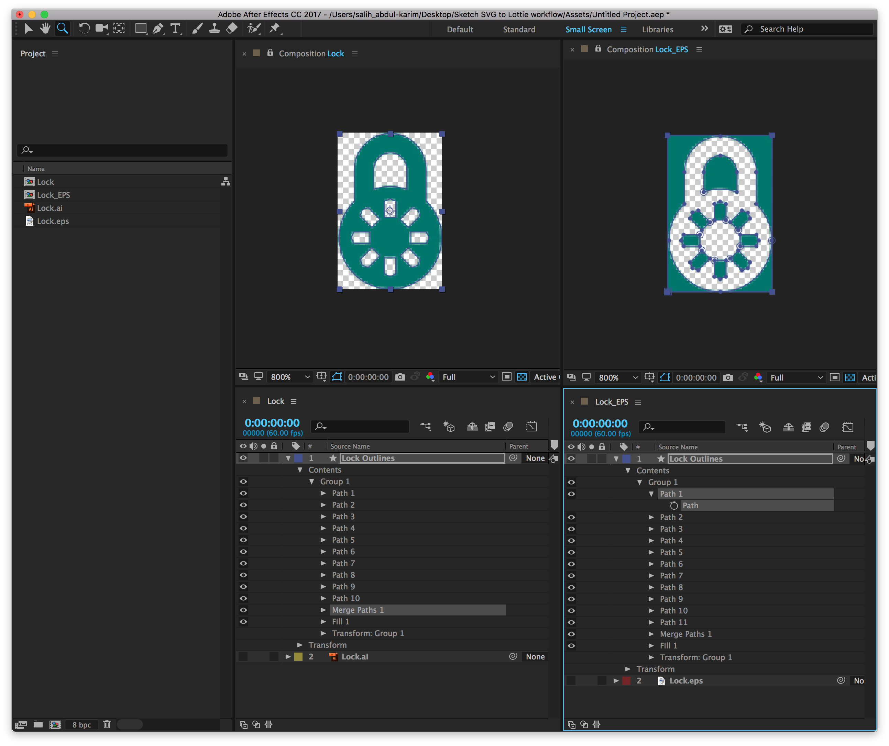
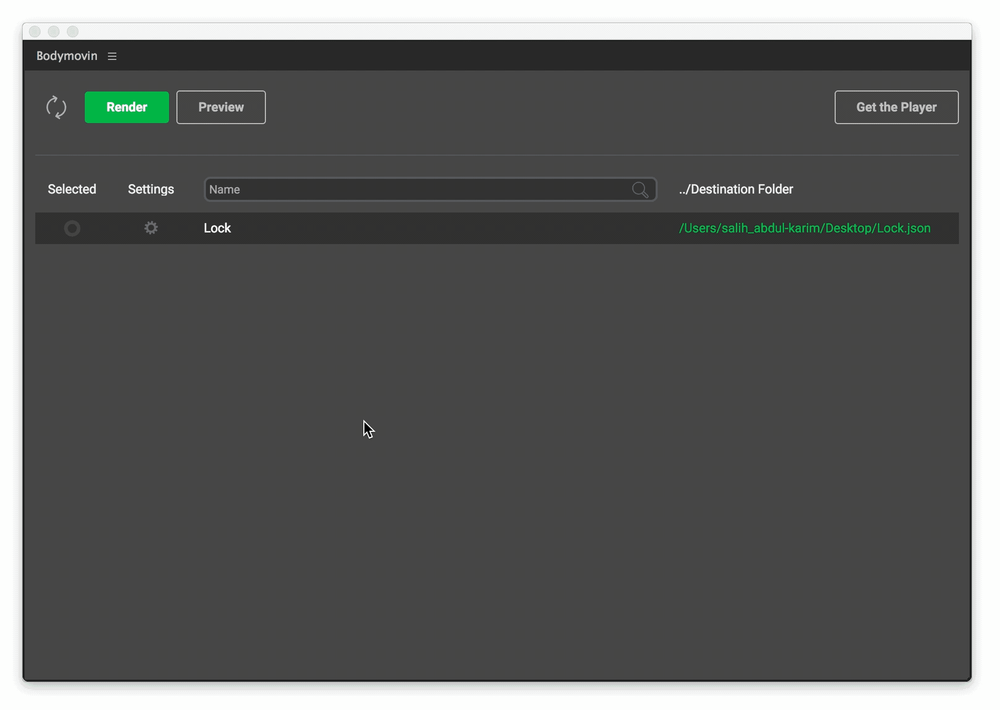
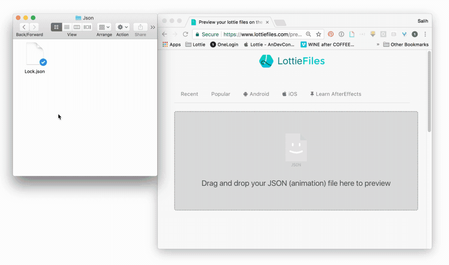
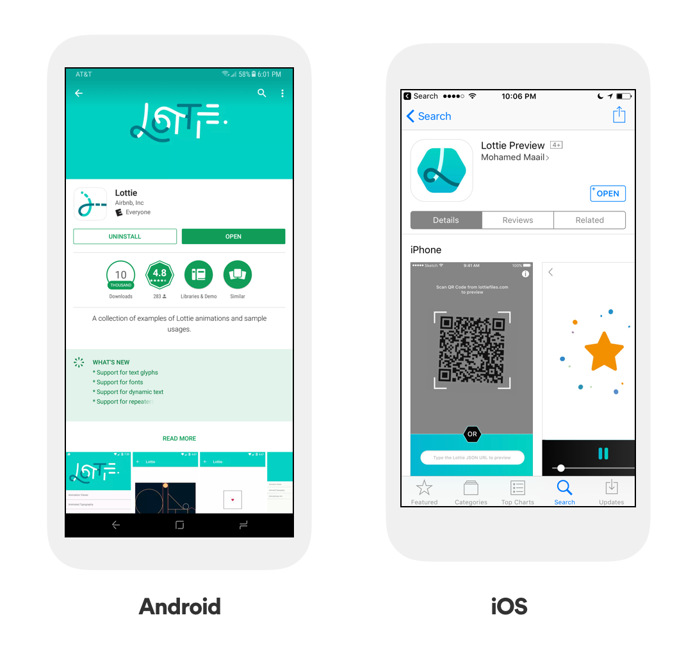

Sketch/SVG/Illustrator to Lottie workflow
This walkthrough explains how to get artwork from Sketch to Lottie. If you already have an SVG skip to step 3. If you're working in illustrator start at step 4.
It doesn't dive into any animation techniques. For that check out one of our other walkthroughs.
We're assuming you have three things. Adobe Illustrator, Adobe After Effects, and Bodymovin. For a walkthrough on how to install Bodymovin go here.
1 - Ensure artwork is grouped
To get the asset exported in one piece everything needs to be put into a single group in Sketch

2 - Select the group and export as an SVG
You might be thinking 🤔 Why not export artwork as a PDF or EPS that goes directly into AE?? We'll explain why later. If you don't have illustrator a PDF or EPS will still work, you just might have to do more cleanup in After Effects. Check out cleanup tips in the Debugging section

3 - Open SVG in Illustrator and save as a .AI file


4 - Import that .AI file into After Effects
After you open After Effects either drag the illustrator file onto the project window or go to File > Import

5 - Create composition, set duration and check Frame-rate
After dragging the Illustrator file down to the little composition icon in the bottom of the project panel you will have a new composition perfectly sized for your file.

Next you can go to the menu and select Composition > Composition settings. I usually work in 30fps or 60fps.
Its important to pick the right frame-rate up front because if you have to change it later things can get weird with pre-existing keyframes. Also you can choose your duration. If you're intending to export a static asset just make the duration a second. If you're going to animate, its up to you. You can always change it again later
6 - Convert illustrator file into shape layers
Select the layer in the composition and in the Layer menu select "Create shapes from vector layer" It then creates a new "Shape Layer" based off of your illustrator artwork, that has editable vector properties of the artwork, such as paths, strokes, fills, etc.

So back to that question "Why didn't I just export a PDF or EPS from Sketch??" This is where it counts. When you export a PDF or EPS from Sketch sometimes it adds artboard paths to the shape layer when its converted.

The one on the left is an SVG converted, and the example on the right is an EPS converted. The example on the right you can see the transparency is inverted, because its got some paths that are the size of the artboard. If you have a complicated piece of artwork things can really get strange. You can always go through and cleanup the shape layer by deleting unused paths and artboard paths, its just time consuming and annoying. Thats why SVG is best.
6 - Do some animation magic. Or not.
Here you can choose to do some animation magic, or if you're just looking to create a static asset for Lottie you're done.
7 - Exporting with Bodymovin
Next if the panel isn't already open go to Window > Extensions > Bodymovin.

Select the composition you want to export by clicking the circle to the left. Next select the destination by selecting the 3 dots on the right. Name your file, and press Render the big green button on the top left
8 - Testing your animation
Next step is to test your animation to ensure you're not using any unsupported features, and that everything looks as desired.
There are a few different ways to test, one of the easiest is by using Lottiefiles.com.
9 - Upload onto Lottiefiles.com
Open up your browser to Lottiefiles.com and drag your json file directly onto the page

You should see your animation. If it looks correct, thats a great sign, as it means you're using bodymovin supported features.
The next step is to test it on your platform of choice, android or iOS.
10 - Download Lottie files preview app
Download the Lottie app from the Google play store or the Lottie Preview app from the App store.

11 - Scan the QR code
After its downloaded just use the camera to scan the QR code.

If you're animation looks correct in the preview app, you are good to go!
If it doesn't then its time to do some debugging. Check out our After Effects debugging tips to see some techniques to get your animation working. If all else fails file an issue on github with your AE file attached and we'll do our best to support you.